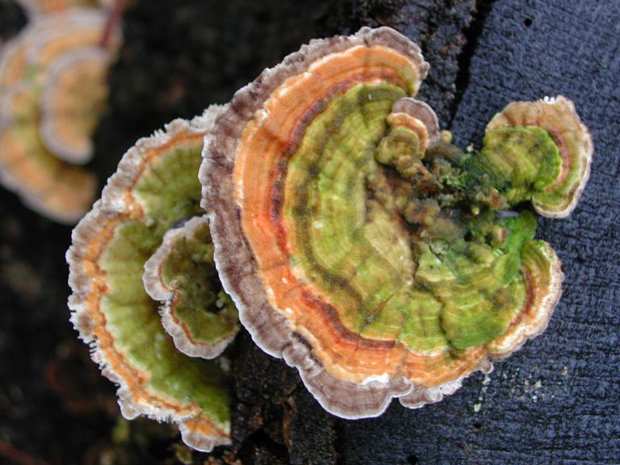

तुर्की पूँछTurkey Tail
Trametes versicolor · Polyporaceae · FNG-0014

- Scientific name
- Trametes versicolor (L.) Lloyd
- Family
- Polyporaceae
- Hindi
- तुर्की पूँछ
- Status here
- native
- IUCN
- not evaluated
When to look कब देखें
Present all year.
तुर्की पूँछ / Turkey Tail
Trametes versicolor (L.) Lloyd — Polyporaceae
तुर्की पूँछ (सतरंगी खुम्बी / मल्टीकलर ब्रैकेट / ट्रामेट्स) — पूर्वी उत्तर प्रदेश के जंगलों, सड़े हुए लकड़ी के लट्ठों, गिरे हुए पेड़ों के ठूंठों और खेतों की बाड़ के खंभों पर साल भर पाया जाने वाला एक अत्यंत सामान्य, पतला, चमड़े जैसा सख्त और पंखे के आकार का ब्रैकेट कवक (leathery bracket fungus) है। इसकी सबसे बड़ी पहचान इसके टोपे के ऊपर बने संकेंद्रित रंगीन छल्ले (concentric bands of brown, tan, cream, and grey) हैं जो नर तुर्की पक्षी के फैले हुए पूंछ के पंखों जैसे दिखते हैं। यह एक के ऊपर एक परतों (overlapping shelves) में उगता है। इसकी ऊपरी सतह मखमली होती है, जबकि निचली सतह पर सफेद-क्रीम रंग के अनगिनत छोटे-छोटे छिद्र (pores) होते हैं। यह कवक अखाद्य (inedible) है क्योंकि यह बहुत सख्त और लकड़ी जैसा होता है, लेकिन यह दुनिया के सबसे वैज्ञानिक रूप से अध्ययन किए गए औषधीय कवकों में से एक है। इसके अंदर से 'पॉलीसैकराइड-के' (Polysaccharide-K / PSK / Krestin) नामक तत्व निकाला जाता है, जिसका उपयोग जापान में कैंसर के इलाज में सहायक थेरेपी (adjunct cancer therapy) के रूप में किया जाता है।
Quick Identification त्वरित पहचान
| Feature | Description |
|---|---|
| Cap shape | Thin, fan-shaped or semi-circular flat bracket (3–8 cm wide), growing in dense, overlapping layers on wood |
| Concentric zones | Clearly marked, multicolor bands of cream, tan, chocolate-brown, rusty-orange, and slate-grey |
| Cap surface | Covered in very fine, soft, velvety hairs, with alternating hairy and smooth bands |
| Pore surface | Under-surface is pure white to cream, covered in microscopic pores (3–5 pores per mm), never with gills |
| Texture | Leathery, tough, flexible when fresh, drying hard, stiff, and woody |
Field tip: Look on old decaying mango wood fences or fallen tree stumps during winter. Search for flat, thin, leathery shelves growing in rows. Look at the top surface; it should have beautiful striped bands of grey, tan, and cream like a bird's tail. Turn it over; the bottom should have a white surface filled with tiny pin-sized holes.
Morphology आकारिकी
Biometrics (typical measurements of mature fruit bodies in the northern Indian plains):
| Measurement | Range |
|---|---|
| Cap width | 3.0–8.0 cm |
| Cap thickness | 1.0–3.0 mm |
| Band width | 2.0–5.0 mm |
| Pore density | 3–5 per mm |
| Spore size | 5.0–6.0 × 1.5–2.2 µm |
Structure: Sessile (lacking a stem), attached directly to the wood substrate over a broad base, often spreading laterally.
Underside: Pores are circular to angular, green-yellow in old decaying specimens.
Spores: Cylindrical to oblong, smooth, transparent (hyaline).
Ecology and Substrate पारिस्थितिकी और उपस्तर
- White Rot Fungus: Saprotrophic wood-decay fungus, causing "white rot" by decomposing both lignin and cellulose in dead wood, leaving the wood soft, fibrous, and white-cream in color.
- Substrate: Grows on dead trunks, logs, stumps, and branches of various deciduous hardwood trees, especially Sal (Shorea robusta) and Mango (Mangifera indica).
- Edibility safety caveat:
> [!NOTE]
> This mushroom is strictly inedible due to its dry, leathery, and tough woody texture. While non-toxic, it has no culinary food value. It is harvested solely for pharmaceutical extraction of medicinal polysaccharides.
Associated Species / Interactions संबंधित प्रजातियाँ
- Insect shelter: The overlapping tough shelves provide dry, permanent nesting zones for fungivorous beetles (Ciidae) and mites.
- Symbiotic decay: Works alongside wood-boring beetle larvae, utilizing their tunnels to spread its microscopic mycelium deep inside the logs.
Expected Locally स्थानीय रूप से अपेक्षित
Not a field record. Written from published accounts for eastern Uttar Pradesh. No confirmed local sighting yet — if you have seen it, that is what the atlas needs.
अभी तक स्थानीय पुष्टि नहीं। यह विवरण प्रकाशित स्रोतों से है, किसी अवलोकन से नहीं।
An abundant bracket fungus recorded on fallen logs and old wooden fence posts in all rural blocks of the Basti district, regularly observed in the Harraiya and Basti blocks. Local woodcutters state that this "satrangi khumbi" is a sign of old, rotting wood, and indicates that the structural strength of a wooden fence post has been completely lost.
Distribution वितरण
Global range: Extremely common and widespread across all temperate and tropical regions of the world (cosmopolitan bracket fungus).
In India: Widespread in all forest divisions and agricultural plains throughout the country.
In Uttar Pradesh: Abundant state-wide on all decaying hardwood trees and timber.
In Basti district / eastern UP: Widespread on wood waste.
Research Questions शोध प्रश्न
Anyone can investigate these | कोई भी इन प्रश्नों की जाँच कर सकता है
- Is the Turkey Tail fungus present on a specific dead wood substrate (e.g., Mango vs Sal logs) in Basti? — Survey and record the host tree species for Turkey Tail colonies.
- How many concentric color bands can be counted on a single mature Turkey Tail cap? — Count and compare bands.
- Does the Turkey Tail bracket remain attached to the wood for more than two years without decaying? — Mark and monitor brackets in the field.
- Does the color of the bands change from tan-brown to green due to algae growth during heavy monsoon rains? — Track color changes.
- Does the water absorption rate of white-rotted wood decay faster than brown-rotted wood in your block? / क्या आपके ब्लॉक में व्हाइट-रॉट (सफेद सड़न) वाली लकड़ी में पानी सोखने की दर ब्राउन-रॉट वाली लकड़ी की तुलना में अधिक होती है? — Test water retention of decayed wood.
Similar Species मिलती-जुलती प्रजातियाँ
| Species | How to tell apart | comparison |
|---|---|---|
| False Turkey Tail (Stereum ostrea) | Underside is completely smooth, lacking any pores or holes; cap is often orange-brown and more paper-thin | झूठी तुर्की पूँछ — निचली सतह पर छिद्रों का अभाव |
| Gilled Polypore (Lenzites betulina) | Underside has gill-like structures instead of pores; cap has similar concentric bands | गिल्ड पॉलीपोर — छिद्रों के स्थान पर गलफड़े |
| Hairy Bracket (Trametes hirsuta) | Cap is thick, heavily covered in coarse white-grey hair; lacks the distinct colorful bands | रोएँदार ब्रैकेट — सफेद-धूसर मोटे बाल, रंगीन पट्टियों का अभाव |
Field rule: Thin, leathery, fan-shaped bracket growing in overlapping shelves on dead wood, with multicolored concentric velvety bands on top, a white pore surface below, and white spore print, is Turkey Tail (Trametes).
Taxonomy & Classification वर्गीकरण
Original description. Carl Linnaeus described this species as Boletus versicolor in 1753 in his Species Plantarum (Vol. 2, p. 1176). Curtis Gates Lloyd placed it in the genus Trametes in 1920. The genus name Trametes is derived from the Latin trama, meaning thin woven fabric or warp, referencing the fibrous context of the fungus. The specific name versicolor is Latin for of various colors.
Subspecies. Monotypic — no subspecies are currently recognised.
Family and order placement. Placed in the order Polyporales, family Polyporaceae (polypore family), genus Trametes.
Phylogenetic notes. Trametes versicolor is a key member of the core polyporoid clade, possessing highly specialized extracellular enzymes (laccase, lignin peroxidase) that allow it to degrade the complex aromatic polymer lignin, a trait evolved during the Carboniferous period.
IUCN status rationale. Not evaluated (NE) by the IUCN Red List. It has one of the most abundant, stable, and secure populations among all wood-rotting fungi globally.
Photo Gallery फोटो गैलरी
References संदर्भ
- Lloyd, C. G. (1920). Mycological Notes. Cincinnati, Vol. 6, p. 1045. [original generic transfer]
- Linnaeus, C. (1753). Species Plantarum. Laurentii Salvii, Holmiae, Vol. 2, p. 1176. [original description as Boletus versicolor]
- Bilgrami, K. S., Jamaluddin, S. & Rizwi, M. A. (1979). Fungi of India. Today and Tomorrow's Printers & Publishers, New Delhi.
- Tsukagoshi, S., Hashimoto, Y., Fujii, G., Kobayashi, H., Nomoto, K. & Oihara, K. (1984). Krestin (PSK). Cancer Treatment Reviews (covers PSK cancer research history).
- World Flora Online (2024). Trametes versicolor details.
- GBIF Occurrence Data — Trametes versicolor, India (2010–2025).
Source file: species/fungi/mushrooms/turkey_tail.md